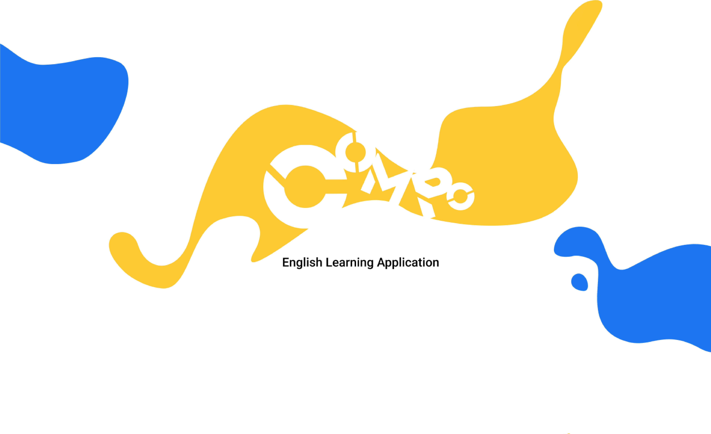
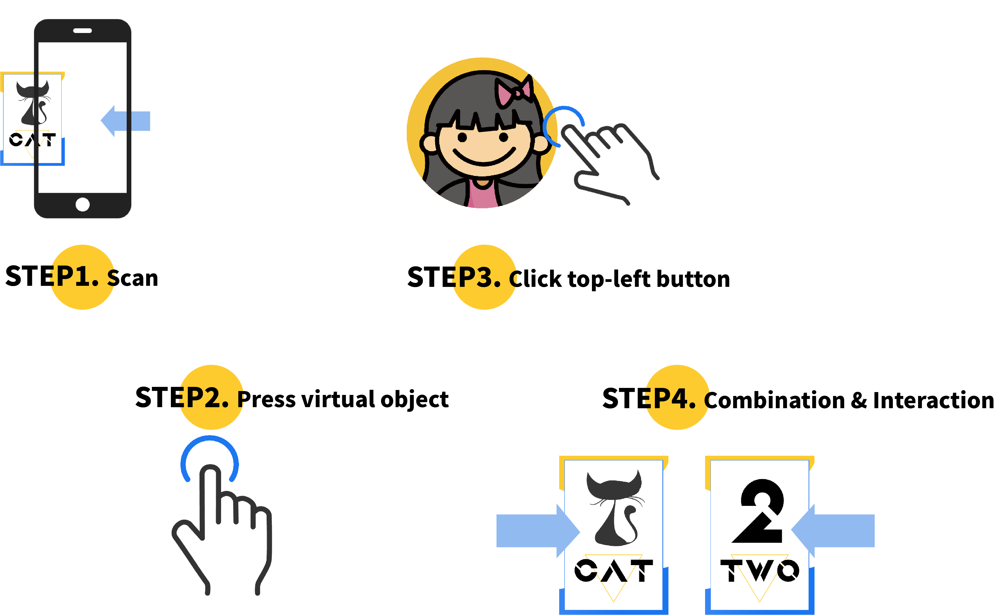
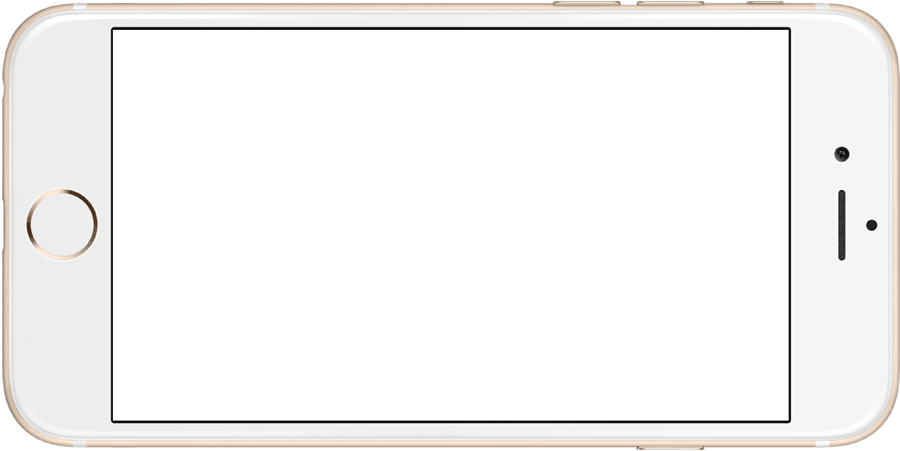

HOW IDEA WAS BUILT
The main concept of COMPO are built on the relationship of interaction and distance. The idea is combination and interaction. By integrating with distance function and play animation function to trigger the specific effect then brings out entertaining and interactive points while learning English. In addition, when specific combination is triggered, the radio source would be set to corresponding sound clip, by utilising IF function to set the specific parameters. In COMPO, not only allow user combine main card (animal card) with one of any other card, but also can combine with two to three cards in one go. Therefore, coding for this part turned out to be very complex since there would have a wide range of combinations.
THE SUPPORT FEATURE
The purpose of this project is addressing the idea of English learning with Augmented Reality technology, therefore, I have used some of the 3D animated models (Animals) which are created by other developers in oder to present the completed concept. In addition, I used some of the voice to text websites to create the sound clips, also a image of a crowds of animals for homepage. For the marker, I designed a series of cards which can be categorized into different types, such as animal card, number card, action card and colour card.
UI DESIGN / USER FLOW
Since the target audience of COMPO is focusing on children, the font and the colour are chosen to be more vivid, and bright. In addition, the UI is designed to be rather simple and easy to understand. A image of a group of animals on the homepage represents this English learning app is surrounded by various interactions done by different animals, also the simple animated title creates an interesting and vibrant atmosphere. When starting, UI would simply take user go through the journey of basic instruction. By following it step by step, user could understand how to navigate and play around with those cards.

UI for voice button
UI for Hand gesture
UI for User visibility
UI for HomePage

WHAT NEEDS MORE TIME OR SKILLS TO COMPLETE
In the beginning, I was going to utilise more animals as my main card, along with three different types of cards (action, number and colour) to interact with. However, the permutations and combinations could be made are way too many than I expected. Furthermore, there are some difficulties in Vuforis’s original built setting (marker’s image would not be completely destroyed when tracking has lost) which might cause problem especially my design need to work with several markers. It required strong programming skills to solve this problem. There is definitely more efficient way to program this, and even more solid and sound without making any errors. Moreover, it could handle more elements in its database. For those technical parts would be taken by professional programmers. What I can do according to my ability is using a simple coding method to present how this interactive system should look like and work, also for its design of interface.
Pick me
If you have any project want to be shined and want to collaborate on creating terrific experience to people then you are welcome to drop me a message, then get in touch.
Message Me
0413648366

tom7948@yahoo.com.tw